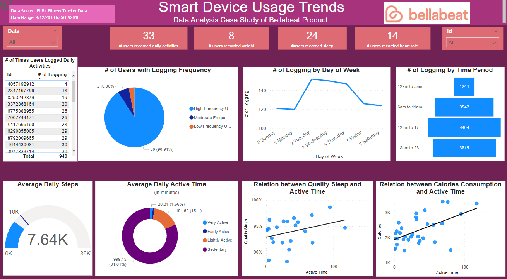

How Can a Wellness Technology Company
Play It Smart?
In this project, I analyzed data to identify common patters and trends in fitness tracking device usage, providing insights for Bellabeat marketing strategy.
Founded in 2013, Bellabeat is a high-tech company that manufactures health-focused smart devices and has positioned itself as a tech-driven wellness company for women. One of Bellabeat's products is the Bellabeat app, which allow users to gain knowledge about their health. Bellabeat app provides data on users' activity, sleep, stress, and mindful habits, and connects to Bellabeats smart device products.
The company has expanded quickly since foundation, and has the potential to become a larger player in the global market. The company executive leaders believe that analyzing smart device fitness data could help unlock new growth opportunities.
Analyze data of an existing competitor to gain insights into how consumers are using the smart device product, and:
Identify trends in smart device usage.
Look into the application of the trends to Bellabeat customers.
Gain insights for Bellabeat marketing strategy.
Public dataset from Kaggle was used to explore the usage trends of wellness smart devices: FitBit Fitness Tracker Data, includes personal fitness tracker from thirty FitBit users over the period April 12, 2016 - May 12, 2016. Specifically the data contains minute-level output for physical activity, sleep monitoring, step counts and weight logs.
Data Preparation
To identify the device usage trends, I did the following to prepare the data:
Download data from Kaggle and unzip files.
Briefly look at each data file to get an understanding of what types of data were collected.
Develop questions and hypotheses based on my preliminary review of the data: How often do users record their daily activities? What day and time do they record activities more frequently? What time do users spend on differnt type of daily activity? Is there any relationship between daily activity time of sleep time? What activities affect weight loss?
Decide which data file to use: Data in dailyCalories_merged.csv, dailyIntensities_merged.csv, dailySteps_merged.csv was already included in dailyActivity_merged.csv, so only the dailyActivity_merged.csv file was used.
Data Processing
I used SQL(BigQuery of Google Cloud) to clean and transform data. See the following link for SQL code:
SQL code
Data Analysis and Visualization
Power BI was used to create visualizations from the data:

Analysis Summary:
Only a few people recorded their weight and less than half of users recorded their heart rate.
Most of users log their daily activities frequently, but not consistently over the week. They tend to records more during weekdays than weekends.
Average count of daily steps taken is less than CDC recommended level.
The more active time, the more calories consumed, while the quality time is more sparsely related to active time. This may due to the fact that not enough sleep time was recorded.
Recommendations
Bellabeat should focus on the following for upgrading and marketing its products:
Upgrade the product to motivate users to use the device more consistently, which could be achieved by enabling social networking and alert notification and improve the comfort level and style of the device.
Design weekend programs in the app to attract more users, and have health and fitness companies pay for advertising.
Collect data from current Bellabeat smart device users regarding their device usage over an extended period of time, and survey them to determine features that women users would value most, since the Fitbit data was not soley based on women users and the sampled over a small population and short period of time.